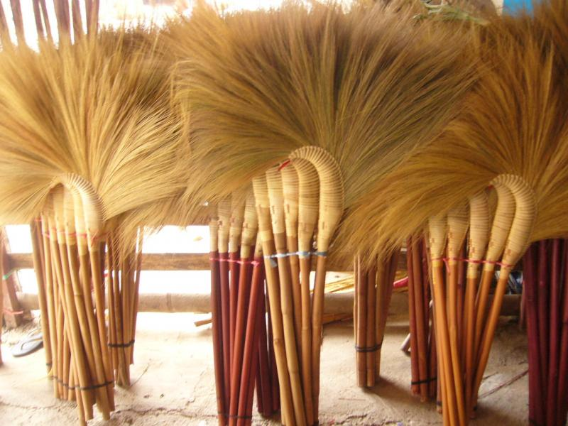
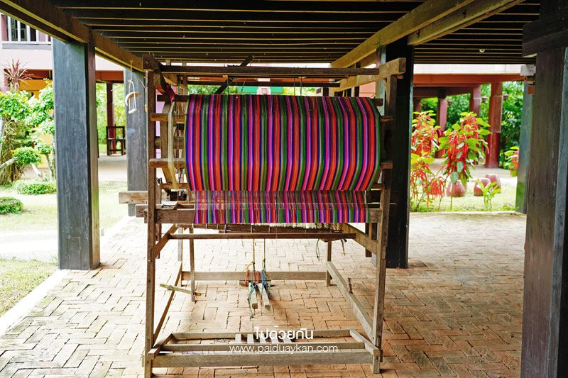
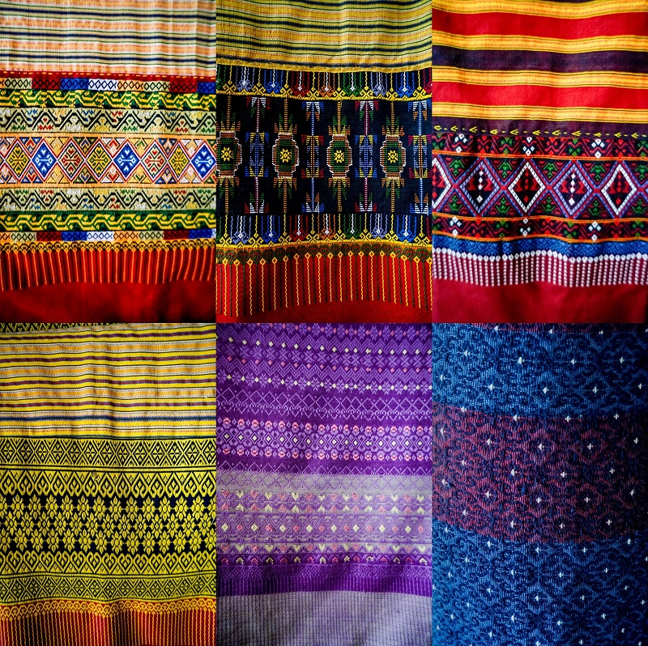
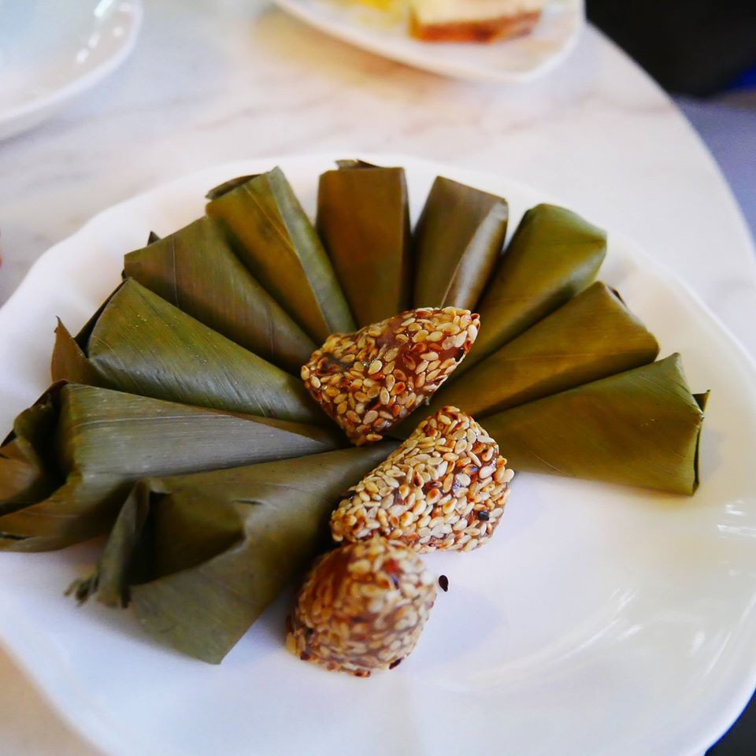
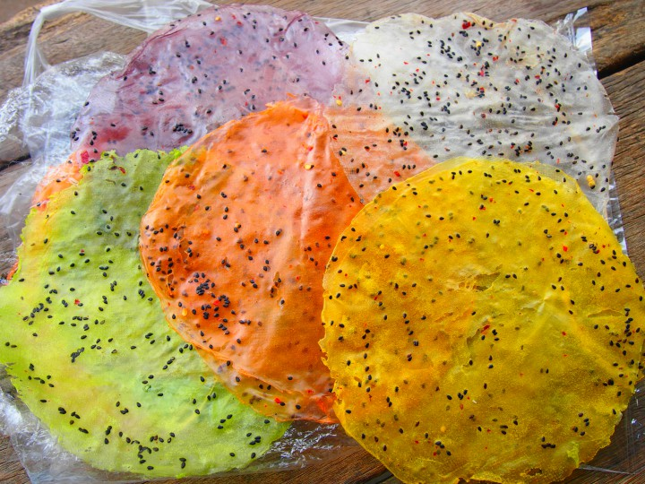

ไม้กวาดตองกง ไม้กวาดที่มีชื่อของอุตรดิตถ์ พระศรีพนมมาศ นายอำเภอนักพัฒนาลับแล เป็นผู้ริเริ่มให้ผลิต ไม้กวาดชนิดนี้มีจำหน่ายทั่วไปในตัวเมืองและที่อำเภอลับแล อันเป็นแหล่ง ผลิตไม้กวาดชนิดนี้

กี่ทอผ้า ที่นิยมใช้ในเมืองลับแลเรียกว่ากี่กระตุก เป็นโครงสร้างทำจากไม้เนื้อแข็ง เป็นภูมิปัญญาของชาวเมืองลับแล ไว้ใช้สำหรับทอผ้า เพื่อนุ่งห่มหรือขายแลกเปลี่ยน โดยมีลายผ้าอันเป็นเอกลักษณ์ของชาวเมืองลับแล เช่น ซิ่นตีนจก ซิ่นซิ่ว ซิ่นดำบึก

ซิ่นตีนจก เป็นซิ่นพื้นเมืองที่งดงามมีลวดลายสวยไปอีกแบบหนึ่ง ซึ่งไม่ซ้ำกับที่อื่น มีการทอ และจำหน่ายที่อำเภอลับแล

ขนมเทียนเสวย มีรสชาติที่อร่อย หวานหอม นิยมเป็นของฝาก มีจำหน่ายทั่วไป

ข้าวแคบ เป็นอาหารพื้นเมืองชาวลับแลทางตอนเหนือตั้งแต่ตำบลชัยจุมพลขึ้นไป เป็นอาหารที่เป็นเอกลักษณ์เฉพาะตัวของชาวลับแล สันนิษฐานว่าน่าจะมีมากกว่า 200 ปีขึ้นไป ข้าวแคบของลับแลจะมีลักษณะแผ่นสีขาว บางใสคล้ายพลาสติก แผ่นแป้งที่ได้จากน้ำแป้งหมักที่ผสมเกลือ งาดำ ไล้ลงบนผ้าที่ขึงบนปากหม้อดิน ขณะที่มีไอน้ำเดือดเหมือนการทำข้าวเกรียบปากหม้อ โดยแผ่นแป้งทำจากแป้งข้าวเจ้ามีลักษณะเป็นวงกลมเส้นผ่านศูนย์กลางประมาณ 7-8 นิ้ว อีกชนิดหนึ่งทำจากแป้งข้าวเหนียวเป็นแผ่นหนากว่าแป้งข้าวเจ้าแต่รสเค็มและมีขนาดเล็กกว่า มีเส้นผ่านศูนย์กลางประมาณ 3 นิ้ว นำไปตากไว้บนแผงหญ้าคาและนำไปตากแดดที่เรียกว่า"ข้าวแคบ"นั้น สันนิษฐานว่าเรียกลักษณะตามของปากหม้อที่ทำข้าวแคบหรือตอนไล้แป้งซึ่งมีลักษณะแผ่นแคบ เดิมทีข้าวแคบมีอยู่ 2 แบบ คือ ข้าวแคบธรรมดาและข้าวแคบงา มีขนาดใหญ่และหนากว่าในปัจจุบัน ชาวลับแลมักจะนำข้าวแคบแห้งมาห่อพันกับข้าวเหนียวหรือกับข้าวอื่นๆสามารถพกพาไปรับประทานได้สะดวก ปัจจุบันข้าวแคบมีหลากหลายรสชาติ เช่น เผ็ด หวาน เค็ม เป็นต้น